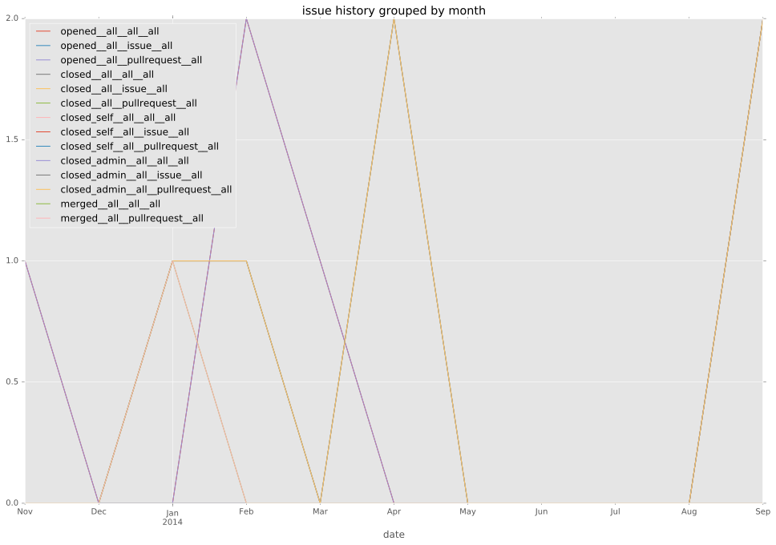
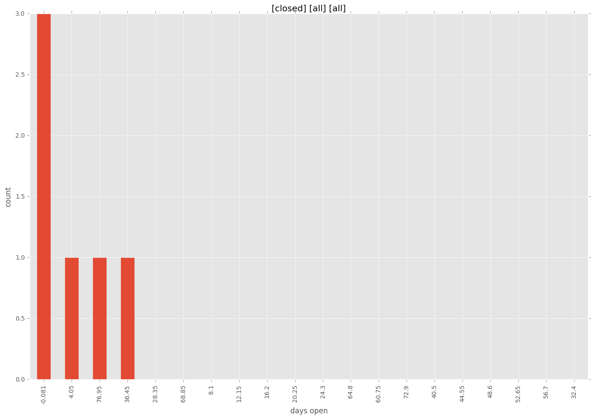
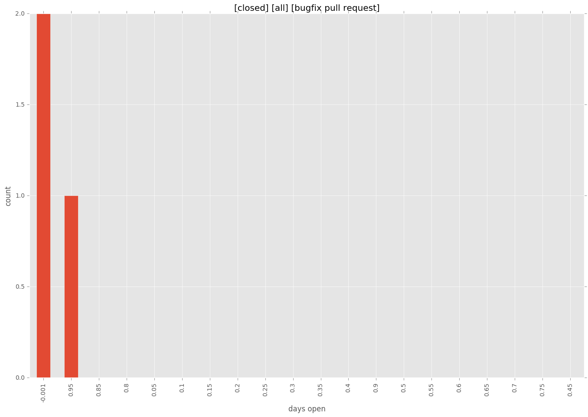
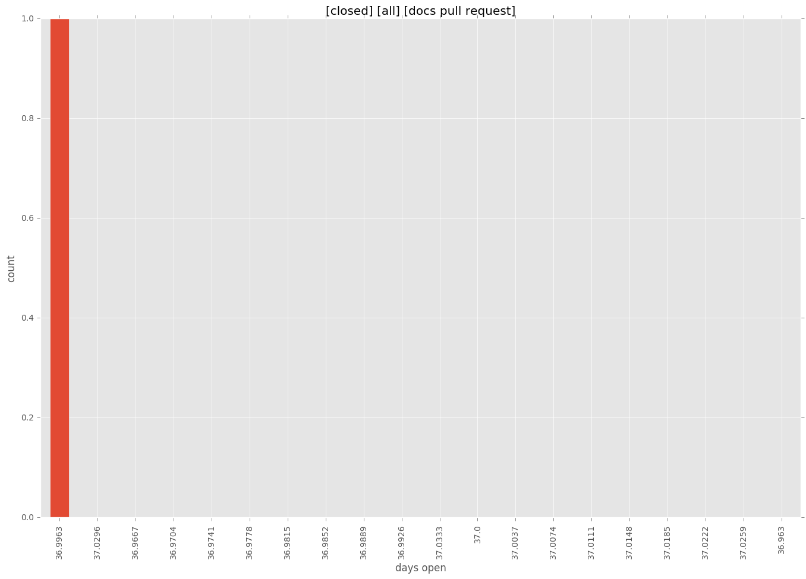
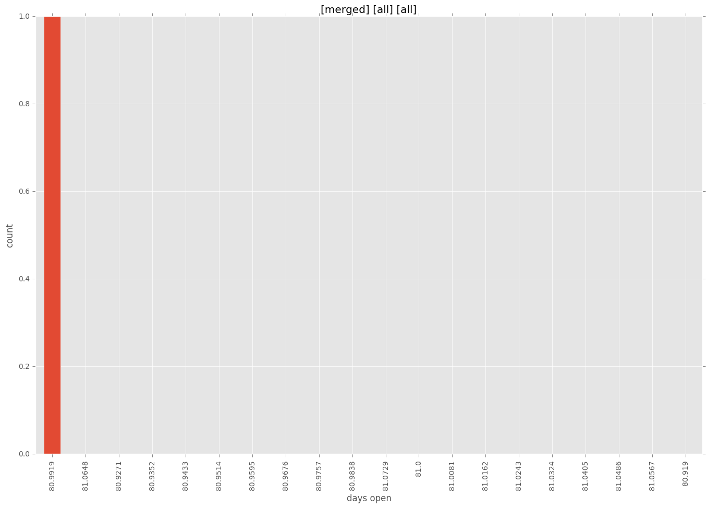
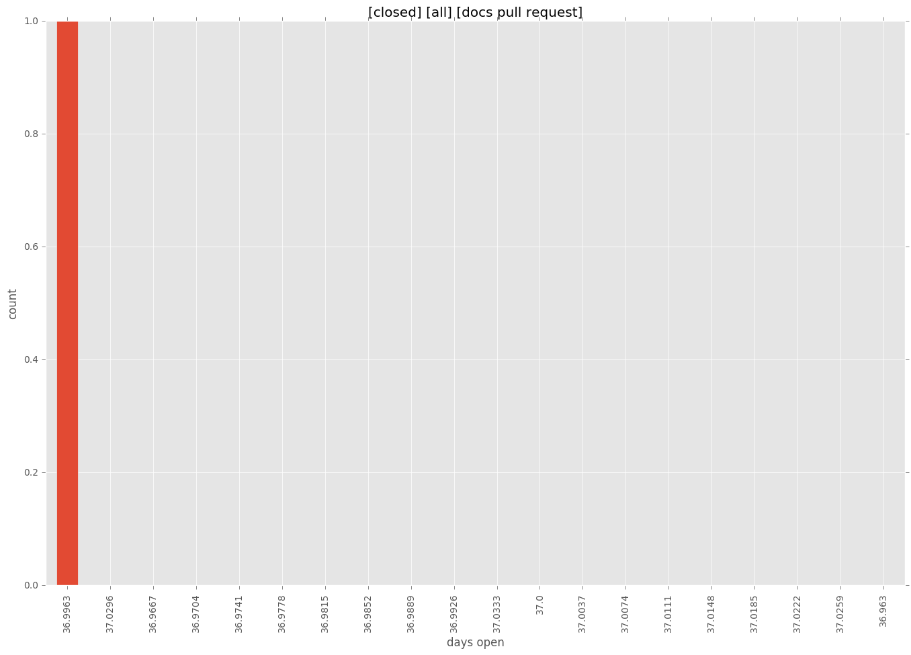
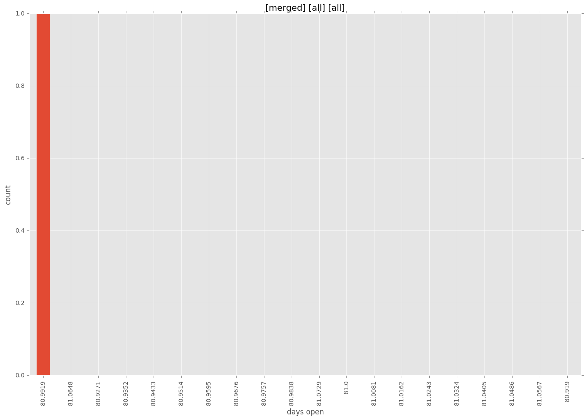

total issue counts
bugfix pull request: 3
feature pull request: 2
pullrequest: 6
docs pull request: 1
issue history

days open by issue type
bugfix pull request
count: 3
std: 0.57735026919
min: 0
max: 1
median: 0.0
mean: 0.333333333333
feature pull request
count: 3
std: 42.1465696508
min: 8
max: 81
median: 81.0
mean: 56.6666666667
all
count: 7
std: 37.3618088682
min: 0
max: 81
median: 8.0
mean: 29.7142857143
pullrequest
count: 0
std: nan
min: nan
max: nan
median: nan
mean: nan
docs pull request
count: 1
std: nan
min: 37
max: 37
median: 37.0
mean: 37.0
closures grouped by total days open



 


